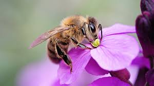

Extraordinary Facts from Around the Globe...
Fact: Honeybees communicate through dance
Honeybees perform a unique dance known as the waggle dance to communicate the location of food sources to other members of their hive. The angle and duration of the dance convey precise information about the direction and distance of the food, allowing fellow bees to locate it efficiently.